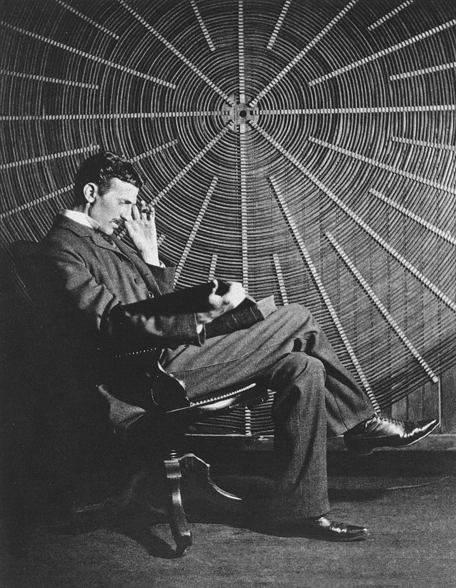

Nikola Tesla
- Voltar
Nascido e criado no Império Austríaco, Tesla estudou engenharia e física na década de 1870 sem se formar, e ganhou experiência prática no início da década de 1880 trabalhando em telefonia e na Continental Edison, na nova indústria de energia elétrica. Em 1884, emigrou para os Estados Unidos e se naturalizou cidadão americano. Ele trabalhou por um curto período na Edison Machine Works, em Nova Iorque, antes de começar por conta própria. Com a ajuda de parceiros para financiar e comercializar suas ideias, Tesla montou laboratórios e empresas em Nova Iorque para desenvolver uma variedade de dispositivos elétricos e mecânicos. Seu motor de indução de corrente alternada e patentes relacionadas ao sistema polifásico, licenciadas pela Westinghouse Electric em 1888, lhe renderam uma quantia considerável de dinheiro e se tornaram a pedra angular do sistema polifásico que a empresa acabou comercializando.
Tentando desenvolver invenções que pudesse patentear e comercializar, Tesla conduziu uma série de experimentos com osciladores/geradores mecânicos, tubos de descarga elétrica e radiografia. Ele também construiu um barco de controle remoto, um dos primeiros já exibidos. Tesla tornou-se conhecido como inventor e demonstrou suas realizações para celebridades e patronos ricos em seu laboratório, e destacou-se por seu talento em palestras públicas. Durante a década de 1890, Tesla seguiu suas ideias para iluminação sem fio e distribuição mundial de energia elétrica sem fio em seus experimentos de alta tensão e alta frequência em Nova Iorque e Colorado Springs. Em 1893, ele fez pronunciamentos sobre a possibilidade de comunicação sem fio com seus dispositivos. Tesla tentou colocar essas ideias em uso prático em seu projeto inacabado da Wardenclyffe Tower, uma transmissora sem fio intercontinental de comunicações e energia, mas ficou sem dinheiro antes que pudesse concluí-lo.
Energia Elétrica sem Fio
- Voltar
De 1890 a 1906, Tesla gastou grande parte de seu tempo e fortuna em uma série de projetos que tentavam desenvolver a transmissão de energia elétrica sem fios. Foi uma expansão de sua ideia de usar bobinas para transmitir energia que ele vinha demonstrando na iluminação sem fio. No momento em que Tesla estava formulando suas ideias, não havia maneira viável de transmitir sem fio sinais de comunicação por longas distâncias, muito menos grandes quantidades de energia. Tesla estudou ondas de rádio desde o início e chegou à conclusão de que parte do estudo existente sobre elas, de Hertz, estava incorreta.
Além disso, essa nova forma de radiação era amplamente considerada na época como um fenômeno de curta distância que parecia desaparecer em menos de uma milha. Tesla observou que, mesmo que as teorias sobre ondas de rádio fossem verdadeiras, elas eram totalmente inúteis para os propósitos pretendidos, já que essa forma de "luz invisível" diminuiria à distância, como qualquer outra radiação, e viajaria em linhas retas até o espaço, tornando-se "irremediavelmente perdido".
Wardenclyffe
- Voltar
Tesla foi a Nova York tentando encontrar investidores para o que ele pensou que seria um sistema viável de transmissão sem fio no Waldorf-Astoria (o hotel onde ele estava vivendo na época). Em março de 1901, ele conseguiu 150 mil dólares (mais de 4 milhões de dólares em valores atuais) de J. Pierpont Morgan em troca de 51% das patentes sem fio geradas e começou a planejar a instalação da Torre Wardenclyffe em Shoreham, Nova York, 161 quilômetros a leste da cidade, na costa norte de Long Island.
Em julho de 1901, Tesla havia expandido seus planos de construir um transmissor mais poderoso para saltar à frente do sistema de rádio de Marconi, que Tesla achava que era uma cópia do dele. Ele procurou Morgan para pedir mais dinheiro para construir o sistema maior, mas Morgan se recusou a fornecer mais capital. Em dezembro de 1901, Marconi transmitiu com sucesso a letra S da Inglaterra para a Terra Nova, derrotando Tesla na corrida para ser o primeiro a concluir essa transmissão. Um mês após o sucesso de Marconi, Tesla tentou convencer Morgan a apoiar um plano ainda maior de transmitir mensagens e energia, controlando "vibrações em todo o mundo". Nos cinco anos seguintes, Tesla escreveu mais de 50 cartas a Morgan, pedindo e exigindo financiamento adicional para concluir a construção de Wardenclyffe. Tesla continuou o projeto por mais nove meses em 1902. A torre foi erguida com 57 metros de altura. Em junho de 1902, Tesla mudou suas operações de laboratório da Houston Street para Wardenclyffe.
Os investidores de Wall Street estavam colocando seu dinheiro no sistema de Marconi e alguns da imprensa começaram a se voltar contra o projeto de Tesla, alegando que era uma farsa. O projeto parou em 1905 e, em 1906, os problemas financeiros e outros eventos podem ter levado ao que o biógrafo de Tesla, Marc J. Seifer, suspeita ter sido um colapso nervoso do inventor. Tesla hipotecou a propriedade de Wardenclyffe para cobrir suas dívidas no Waldorf-Astoria, que chegaram a 20 mil dólares (510 mil dólares em valores atuais).